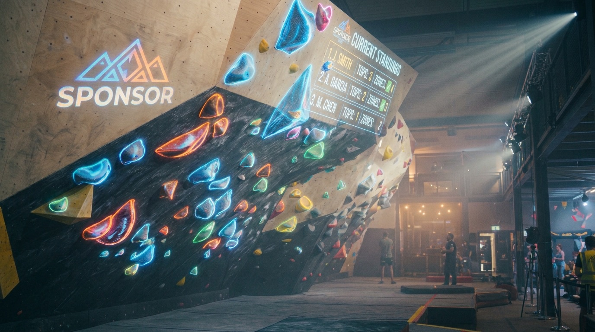

Example: projection mapped onto the boulders

What the show includes
- Live replays that compare an attempt with a reference run.
- Interactive event and sponsor visuals mapped to the competition wall.
- Optional output for the stream and side screens.
- Projection runs only when the wall is clear, such as between attempts and during breaks.
Leaderboard & scoring integration
This tier can integrate with an existing leaderboard and scoring system. A custom leaderboard or scoring build is available for an additional fee.
Delivery & budget
Allow 3–5 weeks for camera setup, content, calibration and rehearsal. A partial-wall planning example is about 6 × 4 m; full-wall coverage uses two projectors. Confirm the final image size and lens position at the venue.
| Partial wall · approx. 6 × 4 m | Full wall | |
|---|---|---|
| Projector rental | €199* / 1 day | €398* / 1 day (2 units) |
| Cameras and compute | €100–300 | €100–300 |
| Content and interactive development | €100–250 | €100–250 |
| On-site crew and calibration | €500 | €500 |
| Estimated total, excluding delivery | €899–1,249+ | €1,098–1,448+ |
* Starting rental estimate based on an 8,000 lm projector. The required brightness and number of projectors—and therefore the rental cost—may increase depending on wall size, surface and ambient lighting. The Beamer Budgeting database lists this rental reference at €199 for one day, €298.50 for two days, and approximately €796 per week (prices include VAT; checked 15 Nov 2026). Delivery is extra; confirm availability and delivery cost with the rental company.
Brightness check
At 8,000 lm over 24 m², the calculator's 0.8 efficiency assumption gives about 267 lx at the wall. That is plausible in a dimmed venue: about 3:1 contrast at 133 lx ambient light, or 5:1 at 67 lx. Measure the actual wall; brighter gym lighting may need dimming or more projector output.
Venue setup
- A suitable wall and time to calibrate the projection before the event.
- For full-wall coverage, two secure projector positions and edge blending.
- Clear camera views and a rehearsal before competition day.
- Pre-rendered visuals are available if tracking or live data is interrupted.